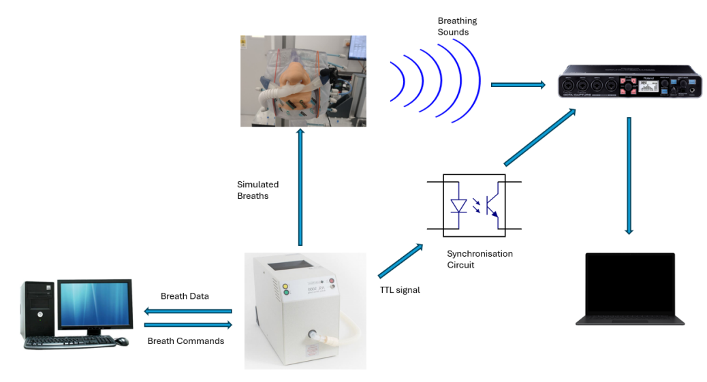
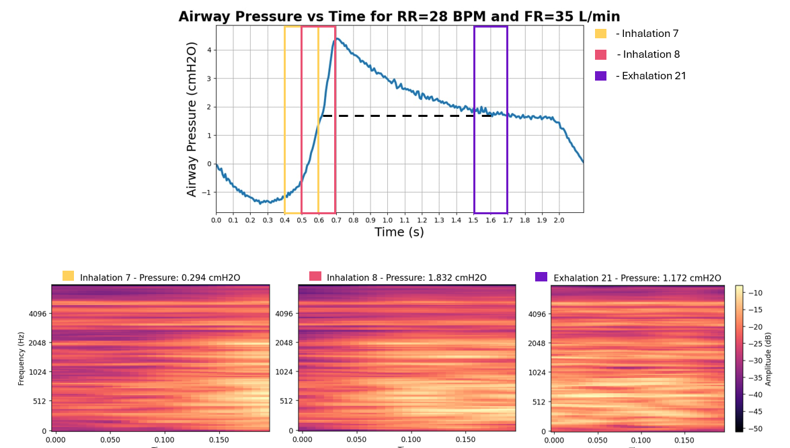
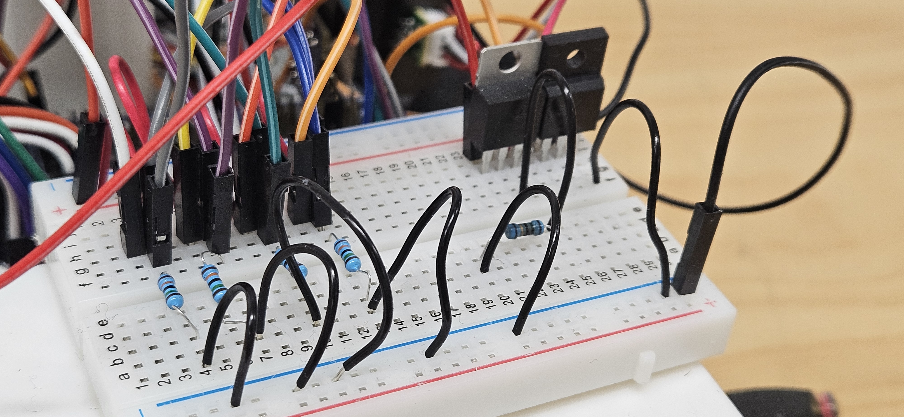
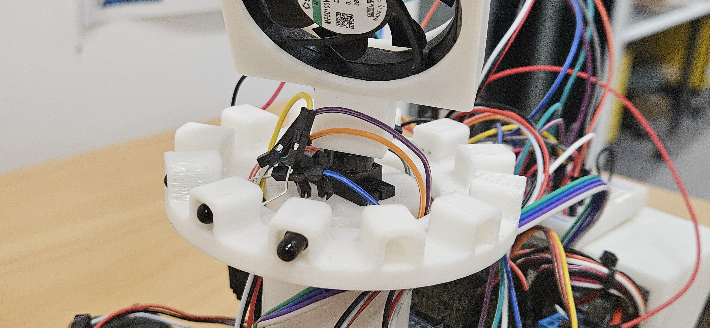
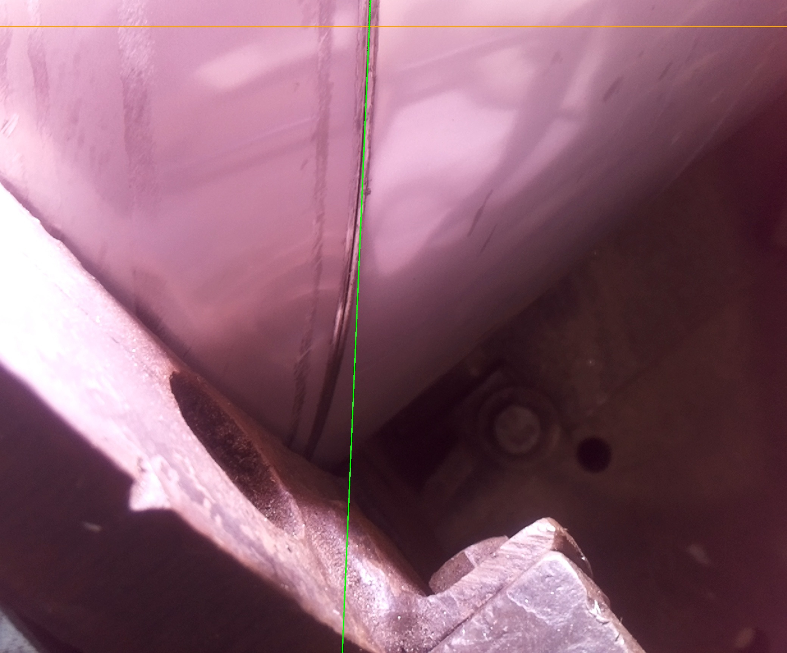

My Projects

Fisher and Paykel Healthcare — Breathsonix, Respiratory Health Analysis
Developed a machine learning model in Python to analyse respiratory sounds and predict patient health in real time. Utilised signal processing and ML libraries like TensorFlow for audio classification.
View Project Details

Hardware Schematic

Signal Processing

University of Auckland — Firefighter Robot
Built an autonomous robot that detects and extinguishes candles using IR sensors, LDRs, and ultrasonic sensors. Programmed in C++ with obstacle detection and autonomous navigation.
View Project Details

Circuit Design

Control System

University of Auckland — Computer Vision, Weld Gap Detection
Designed a Python-based system on Raspberry Pi to detect weld gaps for accurate gun alignment. Used OpenCV for real-time image analysis and automated manufacturing precision.
View Project DetailsImage Processing

Final Results